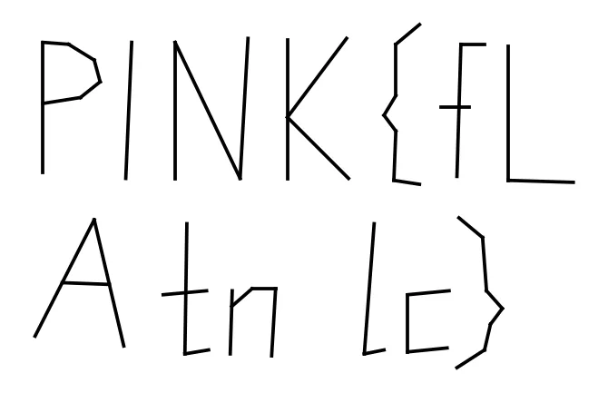

01Start point: identify the container
- What I did: ran file and xxd on tns2_pink.tns. It starts with *TIMLP0500 followed by what looks like a ZIP local-file header. I parsed the entries by hand: Document.xml and Problem1.xml, both stored with compression method 13 (not a standard ZIP method), and a PK 01 02 central directory at the end.
- Result: the file is a TI-Nspire document (.tns, OS 3.x+ format). Its XML entries are encrypted and compressed with TI's proprietary method 13.
- Thinking: method 13 is not deflate, and brute-forcing DES and RC4 guesses against the data failed. A known format needs a known decoder, so I looked for the documented scheme instead of guessing.
02Pivot: decrypt method 13 and decode the XML
- What I did: found the scheme in the Luna source: a 40-byte header, then a keystream made by 3DES-encrypting a counter block, XORed over the data, then raw deflate, then a TIXC0100 token stream. Rather than reimplement it, I ran the TnsTools decoder on the file.
- Result: Document.xml (1166 B) and Problem1.xml (57640 B) decoded with the stored sizes and CRCs both matching. A grep for the flag format immediately found PINK{th1s_15_4_f4k3_fl4g} in Problem1.xml.
- Dead end: the string literally says it is a fake flag, so I treated it as a decoy and kept looking in the same file.
03Pivot: inspect the figure's objects
- What I did: Problem1.xml is a TI GeoGrapher figure. I listed every text, point and segment object with its coordinates.
- Result: the figure holds 63 points, 45 segments and several text objects: axis labels, the decoy PINK{...} box, and two odd fragments, g_ and S_ca.
- Thinking: 63 points and 45 segments in a figure with no visible plot looked like letters drawn out of line segments, and the two short text fragments looked like pieces of a string that had to be slotted in somewhere.
04Pivot: plot the segments and place the text fragments
- What I did: plotted all segments with matplotlib. My first plot had y inverted, which made the P look like a "b", and plotting y directly fixed it. Then I grouped segments into glyph clusters by x range and compared the gaps with the x positions of the text boxes.
- Result: the top row reads PINK{fL, and the bottom row reads A, gap, tn, gap, lc}. The gap between A (x 36.3-40.9) and t (42.9) matches the g_ box at x=41.66. The gap between n (ends 48.6) and l (53.1) matches the S_ca box at x=49.5. Reading top row then bottom row gives PINK{fLAg_tnS_calc}.
- Thinking: the fragments g_ and S_ca landing exactly in the gaps confirms the segments and text are one message split across two kinds of objects.
